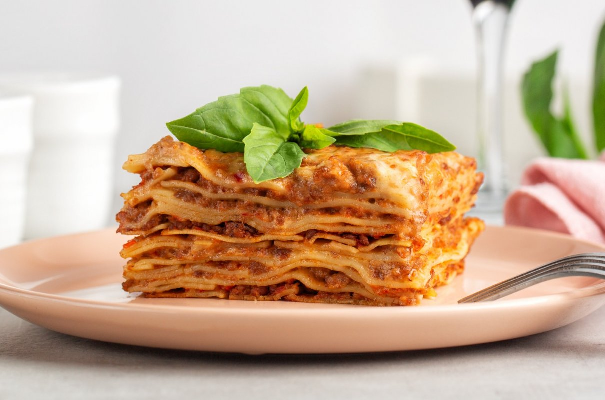

Lasagne

Description
A classic recipe of one of the most loved foods in the world. The ultimate comfort food = homemade lasagna. Family and friends gather around the dinner table at any time for this lasagna recipe. A big warm comforting hug within layers of pasta, tomato sauce, white sauce and melted cheese!
Ingredients
For the Meat Sauce
- 1 pound (450g) ground beef
- 1/2 pound (225g) Italian sausage, removed from casings
- 1 onion, finely chopped
- 2 cloves garlic, minced
- 1 can (28 ounces/800g) crushed tomatoes
- 1 can (15 ounces/425g) tomato sauce
- 1 can (6 ounces/170g) tomato paste
- 1/2 cup (120ml) red wine (optional)
- 2 teaspoons dried oregano
- 2 teaspoons dried basil
- 1 teaspoon salt
- 1/2 teaspoon black pepper
For the Ricotta Mixture
- 2 cups (475g) ricotta cheese
- 1 large egg
- 1/4 cup (30g) grated Parmesan cheese
- 1 tablespoon fresh parsley, chopped
- Salt and pepper to taste
Other Ingredients
- 9 lasagne noodles, cooked according to package instructions
- 3 cups (about 340g) shredded mozzarella cheese
- 1/2 cup (60g) grated Parmesan cheese
- Fresh basil or parsley for garnish (optional)
Steps
Prepare the meat sauce
- In a large skillet or saucepan, brown the ground beef and Italian sausage over medium heat. Break the meat into small pieces as it cooks.
- Add chopped onions and minced garlic to the meat, and sauté until the onions are softened and the garlic is fragrant.
- Pour in the crushed tomatoes, tomato sauce, and tomato paste. Stir well to combine.
- Add red wine (if using), dried oregano, dried basil, salt, and black pepper. Mix thoroughly.
- Simmer the sauce over low heat for at least 30 minutes to allow the flavors to meld. Stir occasionally.
Prepare the Ricotta Mixture
- In a bowl, combine ricotta cheese, a beaten egg, grated Parmesan cheese, chopped fresh parsley, salt, and pepper. Mix well until smooth.
Cook the Lasagne Noodles
- Cook the lasagne noodles according to the package instructions. Drain and set aside.
Assemble the Lasagne
- Preheat your oven to 375°F (190°C).
- In a large baking dish, start assembling the lasagne layers. Begin with a layer of meat sauce at the bottom.
- Place a layer of cooked lasagne noodles over the meat sauce.
- Spread half of the ricotta mixture over the noodles.
- Sprinkle a portion of shredded mozzarella and grated Parmesan cheese over the ricotta layer.
- Repeat the layers: meat sauce, noodles, ricotta mixture, and cheeses. End with a generous layer of mozzarella and Parmesan on top.
Bake the Lasagne
- Cover the baking dish with aluminum foil and bake in the preheated oven for about 25-30 minutes.
- Remove the foil and bake for an additional 10-15 minutes or until the cheese is bubbly and golden brown.
Serve and Enjoy
- Allow the lasagne to cool for a few minutes before slicing.
- Garnish with fresh basil or parsley if desired.
- Serve the delicious lasagne slices on plates and enjoy your homemade meal!